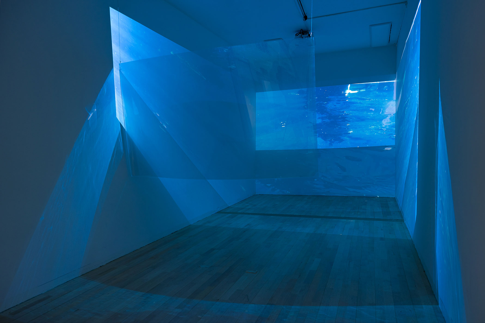
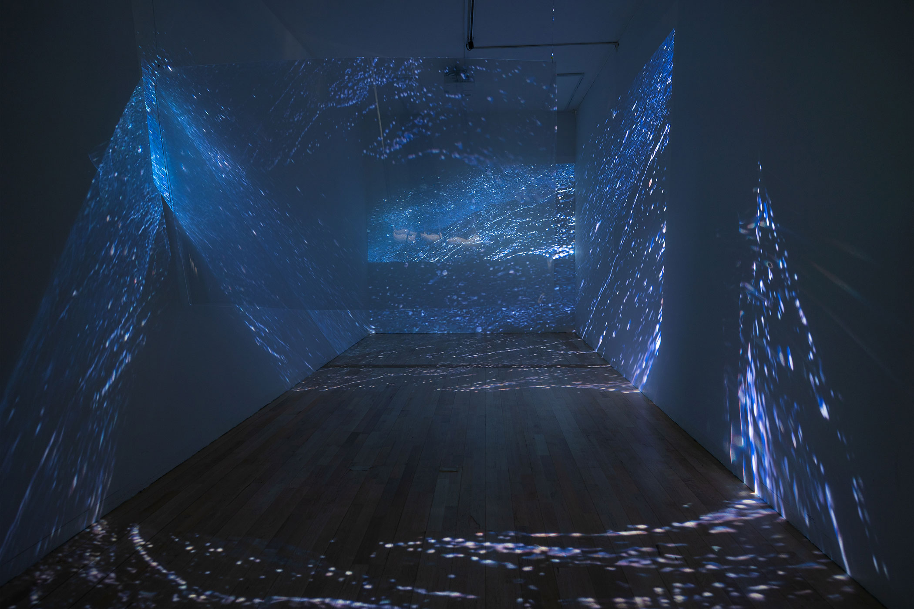
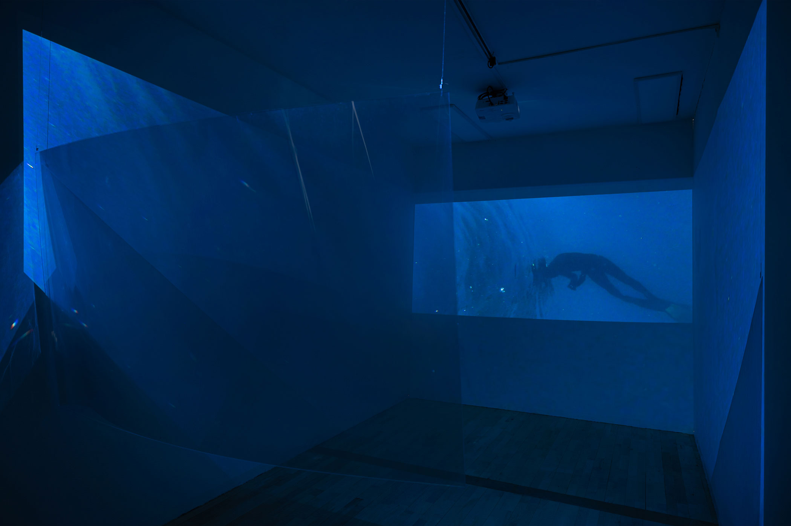
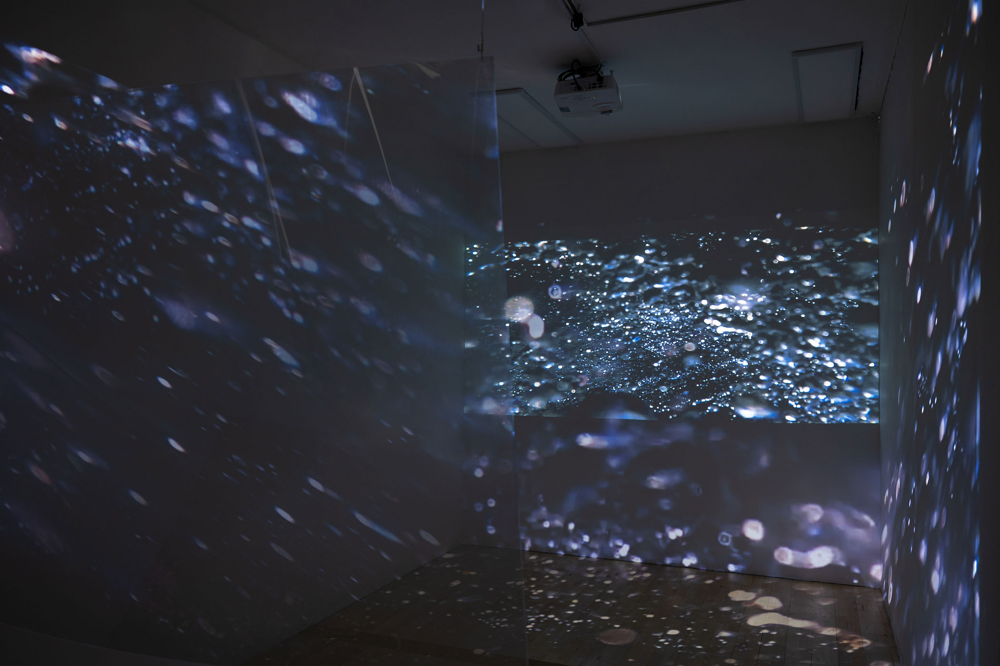
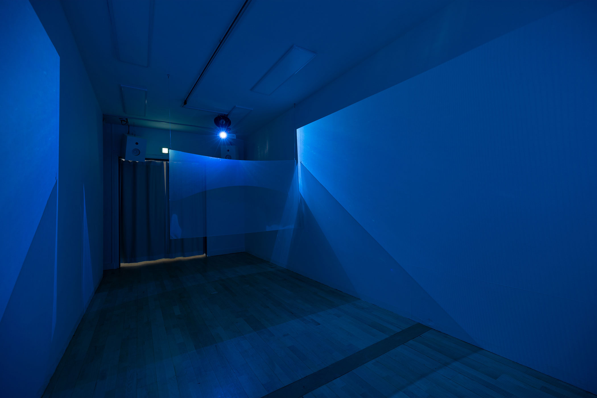
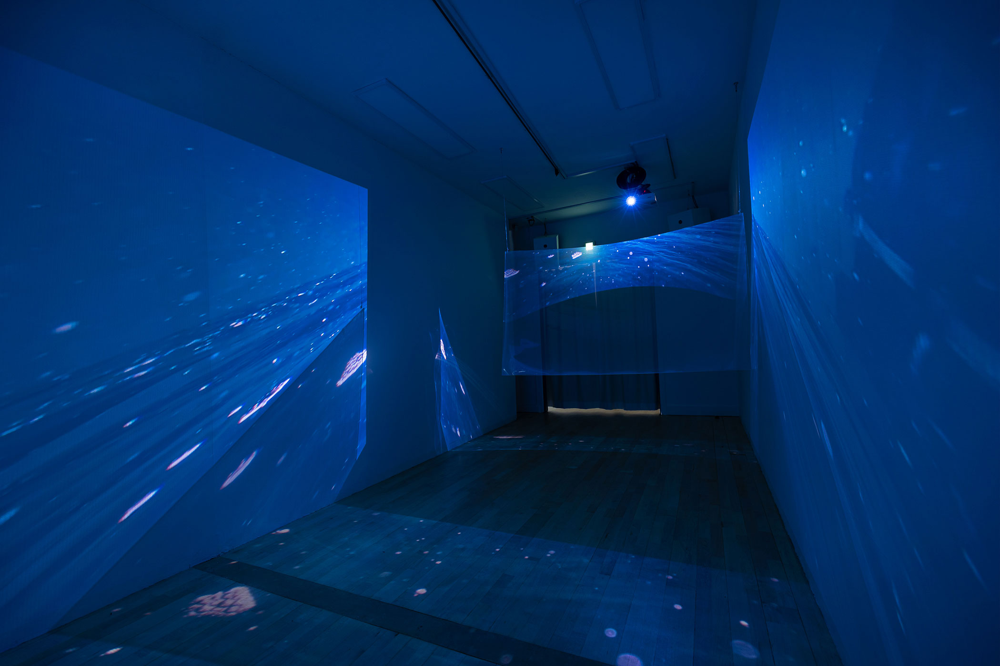

Exhibition:
Between Two Beats
«두 비트 사이의 틈»
2022
기간: 2022. 7. 21- 8.10
8.1일 휴관, 일-금 12:00-6:00/ 토 12:00-7:00
장소: 금천예술공장 3층, P333 (서울 금천구 범안로15길 57)
연계행사 협력: 예술의 시간
후원: 한국문화예술위원회 시각예술창작산실 우수전시
권희수, 노세환, 박윤주, 서재정, 안광휘, 윤주희, 이재욱, 이현우, 조재영, 진달래&박우혁
기획: 고윤정
어시스턴트 기획: 임현영
도록 글: 김민관(아트신)
디자인: 파이카
작품협력 및 설치: 장성욱, 스튜디오에어, 홍앤장예술사무소
사진: 스튜디오마실
도움주신 분들: 조하나, 황수정
연계행사
도슨트투어 : 2022. 7. 26 PM 1시 (금천예술공장~예술의 시간)
2022. 8. 8 PM 1시 (금천예술공장~예술의 시간)
아티스트 토크 & 지금 ‘로컬’: 2022. 8. 6 PM 3시-5시
사운드 퍼포먼스: 권희수, 2022. 8.10 PM 6시
«Between Two Beats»
2022









《두 비트 사이의 틈》에서는 도시의 ‘리듬’이 삶을 관통하면서 생기는 여러 가지 현상들을 작품을 통해 귀결되는 과정을 보이고자 한다. 도시의 리듬은 ‘현전’의 삶이다. 도시의 파편화된 장소, 은닉된 일상의 리듬을 예술가의 눈으로 읽어내는 과정은 우리가 처한 동시대의 삶은 어떤 문제에 직면하고 있는지 작은 틈들을 관찰하는 것이다. 또한 그 틈을 발견하고 다시 새로운 리듬과 구조를 발견하는 과정은 ‘몸’으로 부딪쳤을 때 가능하다. 시각적, 청각적인 리듬이 몸에 체화되는 반복을 통하여 제스처와 습관으로 되기까지 수많은 변증법적인 과정을 거치게 되는데, 이번 전시에서는 예술가 각자가 사유해온 사물, 도시, 패턴, 중첩, 반복 등 리듬을 이루어온 여러 가지 요소들이 소개된다. 또한 금천구는 서울에서 가산디지털단지 등 IT 관련 기업들이 몰려 있는 곳과 주거지가 중심인 공간으로 가장 표준적인 도시의 모습을 갖고 있는 곳이다. 금천예술공장은 약 10여 년 전부터 금천구에 자리를 잡고 문화 예술의 중심지가 되어 왔다. 이번 전시에서는 금천예술공장과 신생공간인 예술의 시간을 중심으로 전시공간을 설정하면서 예술가가 해석하는 삶과 예술의 경계를 함께 경험해 보도록 한다.
권희수는 도시의 소리, 자연의 소리에서 일정한 패턴과 흐름을 찾는다. 물의 흐름이 부딪쳐 발생하는 소용돌이, 신호를 주고 받는 돌고래, 개구리의 호흡에 따른 반복적인 소리들은 패턴, 반복, 변형을 통해서 비트의 최소 단위에서 중폭과 중첩에 이르기까지 추상화되는 결과로 이어질 것이다. 노세환은 흔한 속담이나 인용구를 비틀면서 쉽게 지나치기 쉬운 사회적인 통념에 주목한다. 이번 전시에서는 공중의 추상적 저울 형상을 통해서 균형과 통합의 균열을 꼬집는다. 균형과 관계는 생각보다 단순하지 않고, 각 그룹의 이해 관계에 상충하는 지점은 다른 갈등으로 이어진다. 박윤주는 금천구의 독산역에서 금천예술공장으로 이어지는 골목길의 사물들을 건축, 모션그래픽, 디지털 드로잉의 기법으로 사물의 운동성이 갖고 오는 변이에 대해 이야기한다.
서재정은 건축적 모티브를 통하여 심리적인 공간을 표현하는 회화 작업을 하고 있다. 공간을 표현하는 과정은 하나의 선에서 시작하여 공간 구조를 해체하고 재조합하면서 새로운 형태를 상상한다. 안광휘는 렌티큘러의 시각적 기술의 개념을 청각적으로 구현한다. 서 있는 위치에 따라 다른 음악이 들리며, 그 음악들 사이에서의 연관성과 차이점을 경험하게 만들고자 한다. 95bpm정도의 적당히 빠른 템포로 이루어진 2000년대 초반 올드스쿨 스타일의 비트를 중심으로 두 가지의 랩이 펼쳐진다. 같은 비트 위에서 비슷한 라임과 플로우로 꾸며진 서로 다른 이야기를 통해, 시간에 따라 한 개인이 예술을 바라보는 관점이 어떻게 변화하는지 살펴볼 수 있을 것이다.
진달래&박우혁의 ‹Stage Direction›은 어떤 현재가 ‘현재’인가에 대한 질문이다. 그 질문을 위해 어떤 현재를 시점과 관점에 따라 여러 개로 나누고, 그 현재들을 일종의 무대 지시서(Stage Direction)로 기록한다. 시간이 재배열되거나 생략 혹은 지연된 현재, 공간이 재구성된 현재, 사건의 중심이 내러티브에서 인물로 이동한 현재 등을 위한 무대 지시서는 사건은 똑같이 반복되고 있지만, 시간과 공간이 어떻게 조합되는지에 따라 변주되고 있음을 보여준다. 윤주희가 말하는 새벽 4시의 시간은 자신의 의지와 상관없이 깨어 있는 시간을 뜻한다. 비자발적으로 선택한 시간이지만 그 시간의 깨어 있음을 반복하는 것은 반복하는 것은 어떻게든 삶을 지속하겠다는 것은 부단한 의지에서 비롯되었다.
이재욱은 도로의 리듬을 AR로 구현하여 관객이 도로 규칙에 따라 정해진 노선으로 움직이도도록 유도한다. 자동차가 아닌 개인에게 적용되는 다양한 도로 규칙은 관객이 스스로 무대 위의 퍼포머가 되도록 한다. 이현우는 집과 작업실을 오고 가며 마주하는 풍경들에서 매번 다른 시간대를 발견하고 몸의 관성을 벗어난 찰나를 관찰한다. 조재영은 여러 가지 사물의 윤곽을 점, 선, 면으로 연결하고 확장하는 과정에서 발견된 기하학적인 형태의 조각을 발표한다. 작품에서의 수(number)는 기존 언어와 구분되는 대안적인 언어로 사물간의 서로 다름, 차이에 집중하며 ‘평등’의 가치를 지향한다.
고윤정 기획자와 노경택 작가가 2021년 협업하여 만들었던 ‘이동하는 예술책상’은 여기저기서 쓰이면서 부딪치고 깨져 이동 ‘불가능한’ 예술책상이 되었다. 좋은 자재로 만들어진 큐브 책상은 바퀴로 도시의 울퉁불퉁한 리듬을 온 몸으로 전달하면서 도시 산업화에 여러 가지 질문을 던지게 한다. 이번 전시에서 이동불가능한 예술책상은 작은 아카이브룸과 손님과의 대면용 책상으로 활용된다.